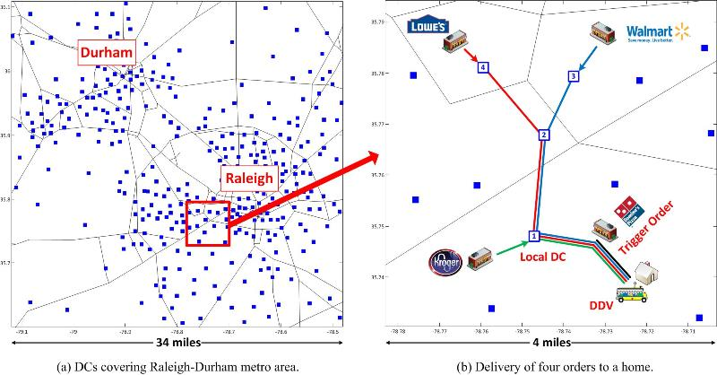
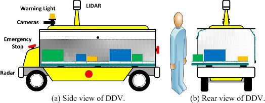
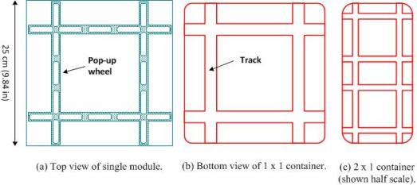
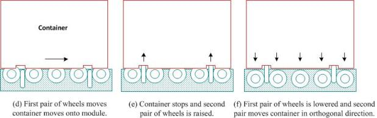
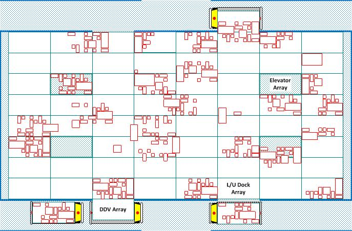
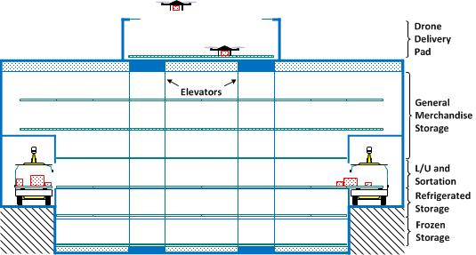
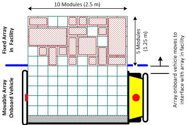

Goal of research: To eliminate the need for all non-recreational shopping by making it possible to have a hot pizza and a vehicle-load of other stuff delivered to your home, exactly when you want, for the price of what you would have tipped the pizza delivery guy.
A home delivery logistics network is proposed in which goods are delivered to the home in reusable standardized containers transported by driverless delivery vehicles (DDV). Since the delivery vehicle does not have a human driver, it is cost-effective to have direct deliveries to the home and to have the vehicle wait to be unloaded. A single shipment delivered to a home can consist of either a direct delivery of a single order from a store or, more economically, several orders from stores at different locations can be sent to a small distribution center (DC) located near the home and then delivered. Reusable containers can be used for each order, with the empty containers returned immediately to the DC. In order to be located close to a home, the size of each DC has to be small, serving just several thousand people. A modular storage device is proposed that would make it possible to operate a DC at a small scale since no human presence is required onsite. The same module storage device used in the DC is used onboard each DDV to make automated loading/unloading possible, thereby allowing a single order to be transported between multiple DCs at a low cost. A home delivery logistics network, as envisioned, would make it possible to eliminate all non-recreational shopping for most people. In addition to general merchandise, meals and groceries could be delivered to the home. This would be especially important for the disabled and the elderly, and would allow them to live in a typical sprawling suburban neighborhood and still have their shopping needs met, at low cost, without the need to drive.

Home Delivery Logistics Network
Example
(DCs shown as blue squares)
An example of the operation of a home delivery logistics network is illustrated in the figure above. Three orders originating from stores located far from the home would be sent a DC close to each store and then transported through a sequence of DCs until reaching the DC close to the home. If these orders do not need immediate delivery, they can accumulate at the local DC and then, when a new order needs immediate delivery (e.g., a take-out order from a restaurant), it serves to trigger the delivery of all of the accumulated orders to the home in one trip. Since the final DC is located close to the home, the lead time for delivery is short and, since the trigger order is presumably of no value until it is in the hands of the person, it doesn’t matter that it has to be unloaded from the DDV as opposed to it be waiting for him or her on their front porch, as is current practice for most parcel delivery in the U.S. (an additional benefit of triggered delivery is the elimination of potential package theft that could occur when an order is left unattended on a porch).
The driverless delivery vehicle (DDV) would be a cargo-only version of a driverless car. A DDV would be a great first area of application for driverless technology since, as compared to driverless cars, DDVs would only have to travel short distances at slow speeds to the home, they would also not have to operate in adverse weather conditions (snow, etc.), and, in good conditions, they could operate 24/7, with the vehicles used for DC-to-DC linehaul transfers during overnight hours, reducing road congestion. The figure shown below represents a possible DDV design. It could be built on top of the chassis of a low cost electric utility vehicle since it would not have to travel at a high speed (max 35 mph on roads and 5 mph on neighborhood streets) or for long distances (several miles from a DC to a home and 40 miles between charges). It would be fitted with the same suite of sensors and computers as used on a driverless car, with the addition of a flashing warning light and large emergency stop buttons on all sides since a human passenger would not be onboard the vehicle to stop it in an emergency. Its only payload would be an enclosed array of storage modules that would be accessible for loading/unloading from either side.

Driverless Delivery Vehicle
Although a DDV could be designed to be just a driverless version of the today’s typical UPS delivery van, this does not take advantage of the big reduction in cost possible due to the elimination of the driver’s labor cost. Instead, a DDV can be designed to have a small payload, making it cost-effective to provide direct delivery to the home. Assuming that it is not going to possible (at least initially) to have a DDV automatically unload goods at the home due to the cost of providing automated unloading equipment at the home, a person would be needed at the home to unload the vehicle. As a result, instead of the packages of a single order being delivered, multiple packages from several orders are delivered to the home in one direct trip from a DC located close to the home.
 
Modular Storage Device and
Standardized Container
A modular storage device is needed in a home delivery logistics network so that all loading/unloading, sortation, and storage activities can be fully automated. Full automation is needed for cost effectiveness because each order from a store to the home might visit a several DCs while it’s in transit. The figure above shows a small square module with orthogonal pop-up powered wheels. Arrays of identical modules are used to form a planar surface in each DDV and DC. Loads in standardized containers have recessed tracks on the undersides that mate with the module wheels to allow their transport along a module array using a series of orthogonal translations without rotation. The modules in the proposed design could be produced at a low cost due to the manufacturing scale economies associated with using only a single uniform module design and the fact that each individual module would not have to be designed to handle the heaviest container because the larger containers would occupy more modules and have their weight spread over these modules, thus lowering the cost of producing each module. Also, it is likely that several small, single-module containers will be as cheap or cheaper to store and transport between DCs as compare to an equivalent multi-module container because it would be easier for the smaller containers to find space available on a DDV for transit and within a DC for storage; this is in contrast with the economies of scale typically found when shipping larger consolidated unit loads.

Top View
of One Level of a Four-dock DC

Side
View of DC
Design of a DC is shown in the figures above. The proposed design provides the flexibility needed to allow any size container to move to any location at any time by integrating sortation with storage using arrays of modules. It enables high cube utilization during sortation and storage together with full accessibility to different size containers. High cube utilization reduces the amount of storage space required within a DC, while full accessibility provides the flexibility needed to re-route containers at any time, and it reduces the time and cost associated with retrieving items from storage. All loading/unloading, sortation, and storage operations are performed on a large open surface composed of arrays of pop-up wheel modules. Only individual arrays are visible, not the individual modules. In the top figure, DDVs are at three of the loading/unloading (L/U) docks. The DC has seven levels: the top level for delivery drone L/U, where a retractable roof can close in inclement weather, three levels below the roof pad provide storage for general merchandise, the next (at grade) level is for DDV L/U and sortation, and the bottom two (below grade) levels are for goods requiring refrigerated and frozen storage, respectively. Four elevators are used to move loads between levels. As compared to a design that uses traditional sortation and storage equipment (e.g., conveyors or an AS/RS), the proposed module-based design provides complete container accessibility at all times. The design differs from traditional designs by trading mechanical complexity for control complexity: each module is a simple mechanism, but each container in the system must be continuously controlled (even when it is in storage, since it will be continuously moving to provide clear paths for other loads). Loading/unloading at a DC dock is shown below, where individual modules are visible. At each dock, loads of containers are automatically loaded and unloaded to and from a fixed array in the DC by positioning a moveable array onboard a DDV.

Automatic Loading/Unloading at DC Dock
A home delivery logistics network, as envisioned, would make it possible to eliminate all non-recreational shopping for most people. In addition to general merchandise, meals and groceries could be delivered to the home. This would be especially important for the disabled and the elderly, and would allow them to live in a typical sprawling suburban neighborhood and still have their shopping needs met without the need to drive or own a car. Also, since empty containers would be available after delivery, each vehicle would provide a low cost means of shipping items from the home; e.g., waste requiring special recycling, sending specimens obtained at home to a lab, or goods manufactured by a home-based business.
The proposed delivery service is meant to be cost-effective even during the early stages of development for those like the elderly and disabled who would likely value the service even at a higher cost and longer delivery lead time (initially, relatively few DCs would be available in the network). The only two major factors impacting overall long-term cost would be the cost of manufacturing the modules and the cost of providing driverless technology for a DDV. A DDV is likely to provide a good testbed to first deploy driverless technology due to their slow speed of operation as compared to a driverless car and lack of a requirement to be able to operate in all adverse weather conditions (the goods can just wait at a DC), and so would be the beneficiary of nearly all early driverless car developments.
Initially, the cost of this type of delivery service would only add to the cost of the goods purchased at the store (although it would eliminate the cost and time required for non-recreational shopping). Over time, this cost would decrease because stores would be able to eliminate many of their costs associated with stocking shelves and checkout, and they could implement a more efficient means of fulfilling orders, using more automated material handling equipment to receive goods and the same modular storage arrays used in the DCs to load orders directly onto DDVs for shipment to customers. Existing retail stores would become, in effect, fulfillment warehouses, with possibly a front showroom area for customers to visit. Also, as the cost of a module decreases, many people might want to purchase a modular storage array for use inside their garage (since garage space would become available once people are able to call driverless cars on demand for their transportation needs).
The proposed home delivery network is a based on work done since 2002 on public logistics networks. This research has produced a rich set of modeling tools for estimating the performance of logistics networks like the proposed home delivery network and for generating representative loads. In a public logistics network, it is assumed that the different entities in the network are separated so that a single firm is not required for coordination and that decentralized control can be achieved via standard coordination protocols and standardized design. All of this work applies to the proposed home delivery network: each DC and each DDV can be owned and operated by a separate firm, and could coordinate their interactions through the use of a bidding-based protocol and a distributed coordination mechanism for shipment consolidation developed as part of public logistics network research.
Kay, Michael G. Home Delivery Logistics Networks using Driverless Delivery Vehicles, Dept. of Industrial and Syst. Eng., North Carolina State Univ., Raleigh, NC, Feb. 22, 2013. Whitepaper describing proposed home delivery logistic network (slides to accompany whitepaper).
Sittivijan, Peerapol. Video showing the operation of DC for unit-size packages at 80% utilization of the available storage space in the DC (blue indicating packages arriving to DC; red indicates packages leaving DC; white indicates packages in storage at the DC).
"Driverless delivery vehicles," InGear, Fall/Winter 2014, p. 22.
Sittivijan, Peerapol. Modular Warehouse Control: Simultaneous Rectilinear Movement of Multiple Objects within a Limited Free Space Environment. Doctoral Dissertation, Dept. of Industrial and Syst. Eng., North Carolina State Univ., Raleigh, NC, 2015. This dissertation research developed the control system needed to operate the DCs in the proposed home delivery logistic network. In this work, the containers were assumed to be unit size, and the results showed that containers could be moved with minimal delay even when up to 95% of the modules in the DC were occupied with containers.
Kay, Michael G. “Design and control of a home delivery logistics network,” invited presentation at the Industrial Engineering Colloquium, Penn State University, State College, PA, Nov. 5, 2015.
Ohnesorge, Lauren K., "N.C. State researcher: Soon, driverless vehicles will bring groceries to your house," Triangle Business Journal, Raleigh, NC, Dec. 8, 2015.
Mello, Jr., John P., "The Future of Deliveries Will Be Driverless," TechNewsWorld, Jan. 5, 2016.
Kay, Michael G., “Design and control of a home delivery logistics network,” (video) invited presentation at the IEEE RoboResearch Event, North Carolina State Univ., Raleigh, NC, May 20–21, 2016.
Kay, Michael G., "A new day for home delivery," ISE ; Industrial and Systems Engineering at Work, 48(8):31–36, 2016.
Kay, Michael G., "Smart city logistics and home delivery,” MHI Solutions, 6(1):63–64, 2018.
Shrikrishna, Bhagyalakshmi V., Kulkarni, Bharat, and Kay, Michael G., "Home Inventory Management and Last-Mile Logistics" 15th IMHRC Proceedings, Savannah, GA, 2018.
Kay, Michael, Sittivijan, Peerapol, Shrikrishna, Bhagyalakshmi, and Kulkarni, Bharat, "Impact of Autonomous Delivery on Last‐Mile Logistics," Poster presented at the 15th International Material Handling Research Colloquium, Savannah, GA, July 23–26, 2018.
Kay, Michael G., "Public logistics networks," keynote presentation at the 16th International Logistics and Supply Chain Congress (LMSCM2018), Denizli, Turkey, Oct. 18–20, 2018.
Kay, Michael G., "COVID and Touchless Logistics for Home Delivery," Blog post, Supply Chain Resource Cooperative, NC State University, July 7, 2020.
Michael G. Kay, Fitts Dept. of Industrial and Systems Engineering, North Carolina State University, Raleigh, NC.